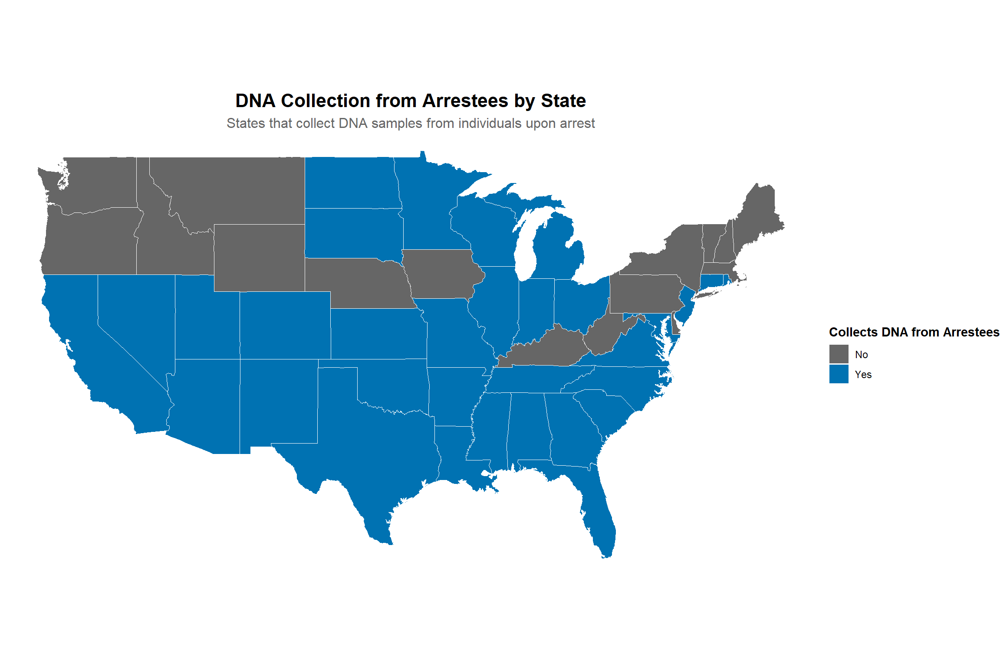
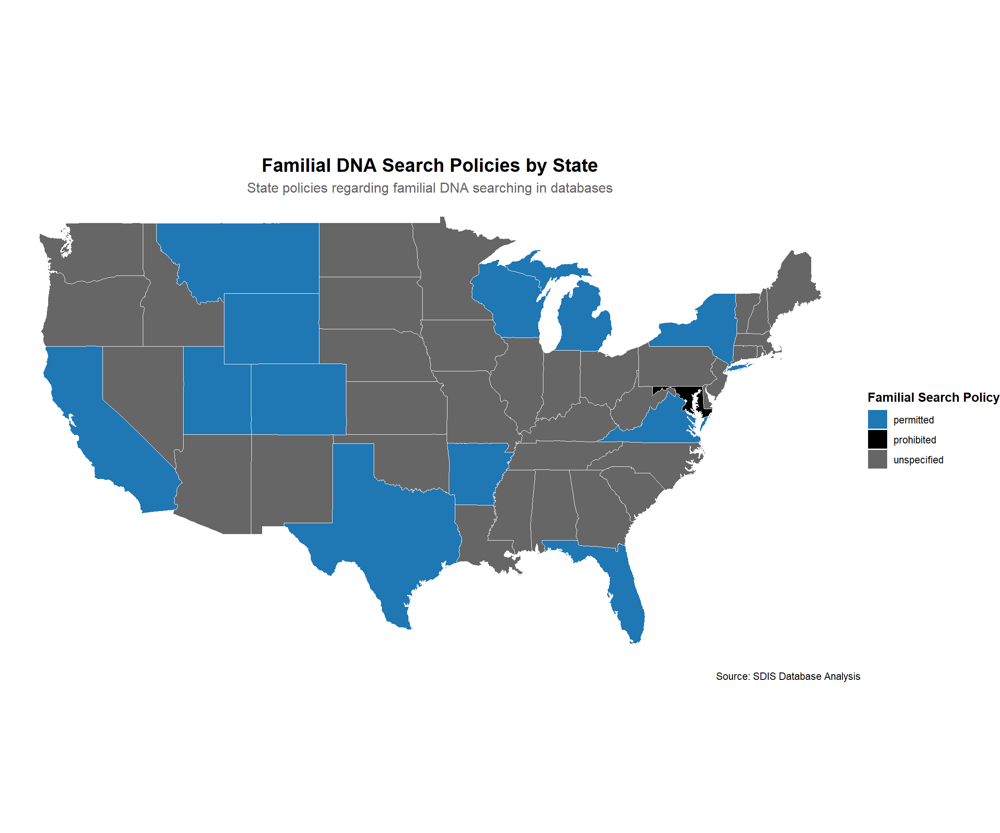
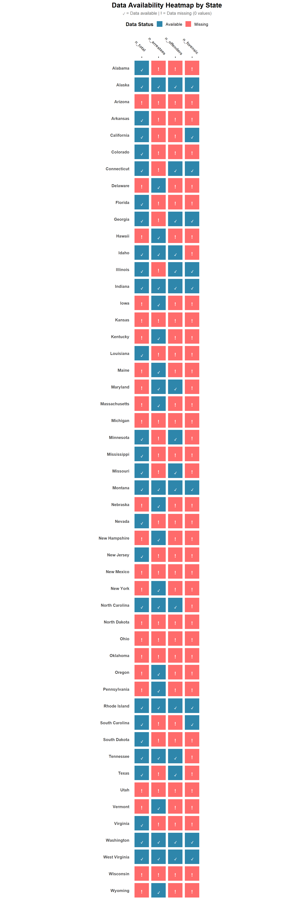
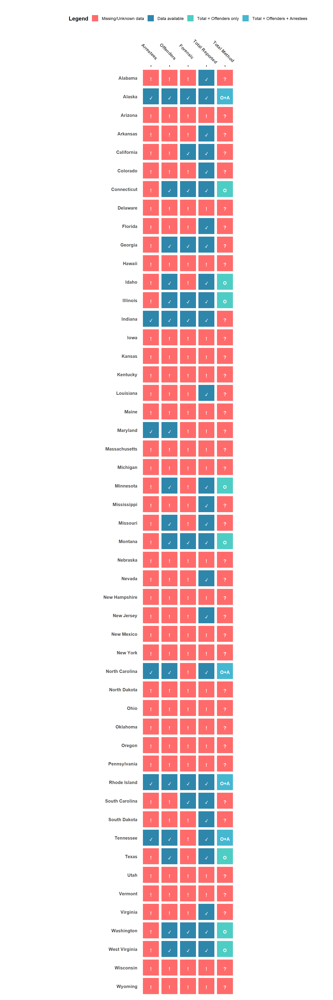

This analysis examines State DNA Index System (SDIS) data that includes information reported separately for each state’s DNA database. The data captures key dimensions including:
Total size of each state’s DNA database
Whether states collect DNA from arrestees (not just convicted offenders)
Whether states allow familial DNA searching
References to relevant state statutes (from Murphy & Tong appendix)
This information provides insight into the variation in DNA database policies, practices, and legal frameworks across U.S. states.
Setup
Load necessary packages for the analysis.
Show setup code
# List of required packagesrequired_packages <-c("tidyverse", # Data manipulation and visualization"readr", # Reading CSV files"dplyr", # Data manipulation"tidyr", # Data tidying"purrr", # Functional programming tools"ggplot2", # Data visualization"heatmaply", # Interactive heatmaps"kableExtra", # Enhanced tables for reporting"DT", # Interactive tables"flextable", # Flexible tables for reporting"maps", # Mapping tools"here", # File path management"remotes", # To install urbnmapr package"sf","patchwork")# Function to install missing packagesinstall_missing <-function(packages) {for (pkg in packages) {if (!requireNamespace(pkg, quietly =TRUE)) {message(paste("Installing missing package:", pkg))install.packages(pkg, dependencies =TRUE) } }}# Install any missing packagesinstall_missing(required_packages)# Load all packagessuppressPackageStartupMessages({library(tidyverse)library(readr)library(dplyr)library(tidyr)library(purrr)library(ggplot2)library(heatmaply)library(kableExtra)library(DT)library(flextable)library(maps)library(here)library(remotes)library(sf)library(patchwork)})# Verify all packages loaded successfullyloaded_packages <-sapply(required_packages, require, character.only =TRUE)if (all(loaded_packages)) {message("📚 All packages loaded successfully!")} else {warning("The following packages failed to load: ", paste(names(loaded_packages)[!loaded_packages], collapse =", "))}
Import SDIS data
Load the SDIS dataset and display a glimpse of its structure, including data types, missing values, and unique counts.
Database Columns Definition
Column
Description
state
Name of the U.S. state or jurisdiction
n_total
Total number of DNA profiles in the state database
n_arrestees
Number of arrestee DNA profiles in the database
n_offenders
Number of convicted offender DNA profiles in the database
n_forensic
Number of forensic/crime scene DNA profiles in the database
arrestee_collection
Whether the state collects DNA from arrestees (‘yes’/‘no’)
collection_statute
Citation to the state’s DNA collection statute
fam_search
Family search policy status (‘permitted’, ‘prohibited’, ‘unspecified’)
database_source
URL source for the database statistics
database_source_year
Year the database statistics were reported
verification_comment
Additional notes or comments about data verification
Show import code
# Set up path to data filedata_file <-file.path(here("data", "sdis", "raw", "sdis_raw.csv"))# Load the SDIS datasdis_data <-read_csv(data_file)# Display data types for each columnenhanced_glimpse <-function(df) { glimpse_data <-data.frame(Column =names(df),Type =sapply(df, function(x) paste(class(x), collapse =", ")),Rows =nrow(df),Missing =sapply(df, function(x) sum(is.na(x))),Unique =sapply(df, function(x) length(unique(x))),First_Values =sapply(df, function(x) {if(is.numeric(x)) {paste(round(head(x, 3), 2), collapse =", ") } else {paste(encodeString(head(as.character(x), 3)), collapse =", ") } }) ) ft <-flextable(glimpse_data) %>%theme_zebra() %>%set_caption(paste("Enhanced Data Glimpse:", deparse(substitute(df)))) %>%autofit() %>%align(align ="left", part ="all") %>%colformat_num(j =c("Rows", "Missing", "Unique"), big.mark ="") %>%bg(j ="Missing", bg =function(x) ifelse(x >0, "#FFF3CD", "transparent")) %>%bg(j ="Unique", bg =function(x) ifelse(x ==1, "#FFF3CD", "transparent")) %>%add_footer_lines(paste("Data frame dimensions:", nrow(df), "rows ×", ncol(df), "columns")) %>%fontsize(size =10, part ="all") %>%set_table_properties(layout ="autofit", width =1)return(ft)}enhanced_glimpse(sdis_data)
Column
Type
Rows
Missing
Unique
First_Values
state
character
50
0
50
Alabama, Alaska, Arizona
n_total
numeric
50
23
28
360000, 79146, NA
n_arrestees
numeric
50
27
8
NA, 52149, NA
n_offenders
numeric
50
34
17
NA, 26997, NA
n_forensic
numeric
50
39
12
NA, 3866, NA
arrestee_collection
character
50
0
2
yes, yes, yes
collection_statute
character
50
0
50
Ala. Code Sec.36-18-25, AK Stat Sec.44.41.035 (2014), AZ Rev Stat Sec.13-610 (2016)
Alabama Department of Forensic Sciences notes that as of January 2024 the state DNA database contains about 360,000 convicted offender and arrestee profileshttps://adfs.alabama.gov/services/fb/fb-statistics#:~:text=The%20DNA%20Databank%20laboratory%20receives,DNA%20profiles%20are%20being%20searched., Alaska DPS crime‑lab CODIS metrics (Feb 2024) list 52,149 arrestee profiles, 26,997 convicted offender profiles and 3,866 forensic profiles in the Alaska state DNA databasehttps://dps.alaska.gov/Statewide/CrimeLab/Forensic-Biology/DNA#:~:text=CODIS%20Metrics%20as%20of%C2%A0February%202024,Offenders%20in%20database%2026%2C997%2015%2C268%2C774., <NA>
Data frame dimensions: 50 rows × 11 columns
Arrestee Collection Information
In the United States, the collection of DNA from individuals upon arrest, prior to any conviction, is a significant law enforcement practice with complex legal and ethical dimensions.
The following map and table illustrate the current patchwork of state laws governing this practice.
Show arrestee collection visualization code
# Create summary data for arrestee collectionarrestee_summary <- sdis_data %>%group_by(arrestee_collection) %>%summarise(count =n(),states =list(state),.groups ="drop" ) %>%arrange(desc(count))# Get US state map dataus_states <-map_data("state")# Prepare map datamap_data <- sdis_data %>%mutate(region =tolower(state)) %>%right_join(us_states, by ="region") %>%filter(!is.na(arrestee_collection))# Option 1: US Map Visualizationmap_plot <-ggplot(map_data, aes(x = long, y = lat, group = group, fill = arrestee_collection)) +geom_polygon(color ="white", linewidth =0.2) +coord_fixed(1.3) +scale_fill_manual(values =c("yes"="#0072B2", # Blue for collecting states"no"="#666666"# Gray for non-collecting states ),name ="Collects DNA from Arrestees",labels =c("No", "Yes") ) +labs(title ="DNA Collection from Arrestees by State",subtitle ="States that collect DNA samples from individuals upon arrest" ) +theme_void() +theme(plot.title =element_text(face ="bold", hjust =0.5, size =16),plot.subtitle =element_text(hjust =0.5, color ="gray40", size =12),legend.position ="right",legend.title =element_text(face ="bold") )# Create detailed summary tablesummary_table <- arrestee_summary %>%mutate(state_list =map_chr(states, ~paste(.x, collapse =", ")),percentage =round(count /sum(count) *100, 1) ) %>%select(Status = arrestee_collection, Count = count, Percentage = percentage, States = state_list)# Display the visualizationsprint(map_plot)

Show arrestee collection visualization code
# Create a nice flextable for the reportft <-flextable(summary_table) %>%theme_zebra() %>%set_caption("Arrestee DNA Collection Status by State") %>%autofit() %>%align(align ="left", part ="all") %>%bg(j ="Status", bg =function(x) ifelse(x =="yes", "#1f77b4", ifelse(x =="no", "#666666", "#CCCCCC"))) %>%color(j ="Status", color ="white") %>%bold(j ="Status") %>%fontsize(size =11, part ="all")ft
Status
Count
Percentage
States
yes
33
66
Alabama, Alaska, Arizona, Arkansas, California, Colorado, Connecticut, Florida, Georgia, Illinois, Indiana, Kansas, Louisiana, Maryland, Michigan, Minnesota, Mississippi, Missouri, Nevada, New Jersey, New Mexico, North Carolina, North Dakota, Ohio, Oklahoma, Rhode Island, South Carolina, South Dakota, Tennessee, Texas, Utah, Virginia, Wisconsin
no
17
34
Delaware, Hawaii, Idaho, Iowa, Kentucky, Maine, Massachusetts, Montana, Nebraska, New Hampshire, New York, Oregon, Pennsylvania, Vermont, Washington, West Virginia, Wyoming
Adjusting n_arrestees
Adjust the dataset to ensure consistency in arrestee DNA collection reporting.
Setting n_arrestees to 0 for states that do not collect arrestee DNA, even if they report non-zero values.
Removed the arrestee_colection column after adjustments were made.
Show pre-processing code
# Create a copy of the data for processingsdis_data_processed <- sdis_data# Count states affected by this adjustmentstates_with_no_collection <- sdis_data_processed %>%filter(arrestee_collection =='no')states_to_adjust <- states_with_no_collection %>%filter(!is.na(n_arrestees) & n_arrestees !=0)if (nrow(states_to_adjust) >0) {cat("States with arrestee_collection='no' but non-zero n_arrestees values:\n")for (i in1:nrow(states_to_adjust)) { state <- states_to_adjust[i, ]cat(paste0(" • ", state$state, ": n_arrestees = ", format(state$n_arrestees, big.mark =","), "\n")) }}# Set n_arrestees to 0 for states that don't collect arrestee DNAsdis_data_processed <- sdis_data_processed %>%mutate(n_arrestees =ifelse(arrestee_collection =='no', 0, n_arrestees))# Use processed data for all subsequent analysessdis_data <- sdis_data_processed
Family Search Policy Status
Familial DNA searching is an advanced forensic technique that uses partial DNA matches to identify potential relatives of an unknown suspect in a criminal database.
The following visualization maps the current patchwork of state policies (‘permitted’, ‘prohibited’, ‘unspecified’).
Show family search policy visualization code
# Create summary data for family search policiesfamily_search_summary <- sdis_data %>%mutate(fam_search =factor(fam_search, levels =c("permitted", "prohibited", "unspecified"),labels =c("Permitted", "Prohibited", "Unspecified")),fam_search_simple =case_when( fam_search =="Permitted"~"Permitted", fam_search =="Prohibited"~"Prohibited",TRUE~"Unspecified/No Policy" ) ) %>%group_by(fam_search, fam_search_simple) %>%summarise(count =n(),states =list(state),.groups ="drop" ) %>%arrange(desc(count))# Get complete data for mapping (include states with missing data)all_states_map <-map_data("state") %>%as_tibble() %>%distinct(region) %>%mutate(state_name =str_to_title(region),has_data = state_name %in% sdis_data$state )# Prepare map data for family search policiesfamily_search_map_data <- sdis_data %>%mutate(region =tolower(state)) %>%right_join(map_data("state"), by =c("region"="region")) %>%filter(!is.na(fam_search))# Option 1: US Map Visualizationfamily_map_plot <-ggplot(family_search_map_data, aes(x = long, y = lat, group = group, fill = fam_search)) +geom_polygon(color ="white", linewidth =0.2) +coord_fixed(1.3) +scale_fill_manual(values =c("permitted"="#1f77b4", # Blue for permitted"prohibited"="#000000ff", # Black for prohibited"unspecified"="#666666"# Gray for unspecified ),name ="Familial Search Policy",drop =FALSE ) +labs(title ="Familial DNA Search Policies by State",subtitle ="State policies regarding familial DNA searching in databases",caption ="Source: SDIS Database Analysis" ) +theme_void() +theme(plot.title =element_text(face ="bold", hjust =0.5, size =16),plot.subtitle =element_text(hjust =0.5, color ="gray40", size =12),legend.position ="right",legend.title =element_text(face ="bold") )# Display the visualizationsprint(family_map_plot)

Show family search policy visualization code
# Create a comprehensive summary tablesummary_table_data <- family_search_summary %>%mutate(state_list =map_chr(states, ~paste(.x, collapse =", ")),percentage =round(count /sum(count) *100, 1) ) %>%select(Policy = fam_search, Count = count, Percentage = percentage, States = state_list)# Create a nice flextable for the reportft <-flextable(summary_table_data) %>%theme_zebra() %>%set_caption("Familial DNA Search Policy Status by State") %>%autofit() %>%align(align ="center", part ="all") %>%align(align ="left", j ="States") %>%bg(j ="Policy", bg =function(x) {case_when( x =="Permitted"~"#1f77b4", x =="Prohibited"~"#000000ff",TRUE~"#666666" ) }) %>%color(j ="Policy", color ="white") %>%bold(j ="Policy") %>%fontsize(size =11, part ="all") %>%width(j ="States", width =3)ft
Policy
Count
Percentage
States
Unspecified
37
74
Alabama, Alaska, Arizona, Connecticut, Delaware, Georgia, Hawaii, Idaho, Illinois, Indiana, Iowa, Kansas, Kentucky, Louisiana, Maine, Massachusetts, Minnesota, Mississippi, Missouri, Nebraska, Nevada, New Hampshire, New Jersey, New Mexico, North Carolina, North Dakota, Ohio, Oklahoma, Oregon, Pennsylvania, Rhode Island, South Carolina, South Dakota, Tennessee, Vermont, Washington, West Virginia
Permitted
12
24
Arkansas, California, Colorado, Florida, Michigan, Montana, New York, Texas, Utah, Virginia, Wisconsin, Wyoming
Prohibited
1
2
Maryland
Three-Panel Policy Map: Horizontal Layout
This visualization presents three key policy dimensions side-by-side: arrestee DNA collection, familial search policies, and FOIA data availability.
Show three-panel map code
remotes::install_github("UrbanInstitute/urbnmapr")library(urbnmapr)# Create FOIA availability columnsdis_data <- sdis_data %>%mutate(foia_availability =case_when( state %in%c("California", "Florida", "Indiana", "Maine", "Nevada", "South Dakota", "Texas") ~"provided",TRUE~"not_provided" ) )# Load US map data with proper AK/HI positioningus_map_data <-get_urbn_map("states", sf =TRUE)# Prepare map datasdis_data_map <- sdis_data %>%mutate(region =tolower(state))us_map_data <- us_map_data %>%mutate(region =tolower(state_name))# Merge polygon data with policy datamap_data_repos <- us_map_data %>%left_join(sdis_data_map, by ="region")# Function to create individual mapscreate_policy_map <-function(fill_var, fill_title, fill_colors, plot_title) {ggplot(map_data_repos) +geom_sf(aes(fill =!!sym(fill_var)), color ="white", linewidth =0.3) +scale_fill_manual(name = fill_title,values = fill_colors,na.value ="gray90",na.translate =FALSE,guide =guide_legend(direction ="vertical",title.position ="top",title.hjust =0.5 ) ) +theme_void() +labs(title = plot_title) +theme(plot.title =element_text(size =25, face ="bold", hjust =0.5, margin =margin(b =5)),legend.position ="bottom",legend.title =element_text(size =1, face ="bold"),legend.text =element_text(size =25),legend.box ="vertical",legend.margin =margin(t =5, b =0) )}# Create the three mapsmap_arrestee_repos <-create_policy_map("arrestee_collection", " ",c("yes"="#1f77b4", "no"="#666666"), "A. Arrestee DNA Collection Policy")map_familial_repos <-create_policy_map("fam_search", " ",c("permitted"="#1f77b4", "prohibited"="#000000ff", "unspecified"="#666666"),"B. Familial Search Policy")map_foia_repos <-create_policy_map("foia_availability", " ",c("provided"="#1f77b4", "not_provided"="#666666"),"C. FOIA Response Status")# Combine maps horizontallyfigure_combined <- map_arrestee_repos | map_familial_repos | map_foia_reposfigure_combined +plot_annotation(title =" ",theme =theme(plot.title =element_text(size =14, face ="bold", hjust =0.5)))
Assess the completeness of data across states, including which states are missing and the availability of key fields.
Show overview code
# Identify states present in the datasetstates_in_data <-unique(sdis_data$state) %>%sort()# Check if all 50 states are representedall_states <-c('Alabama', 'Alaska', 'Arizona', 'Arkansas', 'California', 'Colorado', 'Connecticut','Delaware', 'Florida', 'Georgia', 'Hawaii', 'Idaho', 'Illinois', 'Indiana', 'Iowa','Kansas', 'Kentucky', 'Louisiana', 'Maine', 'Maryland', 'Massachusetts', 'Michigan','Minnesota', 'Mississippi', 'Missouri', 'Montana', 'Nebraska', 'Nevada', 'New Hampshire','New Jersey', 'New Mexico', 'New York', 'North Carolina', 'North Dakota', 'Ohio','Oklahoma', 'Oregon', 'Pennsylvania', 'Rhode Island', 'South Carolina', 'South Dakota','Tennessee', 'Texas', 'Utah', 'Vermont', 'Virginia', 'Washington', 'West Virginia','Wisconsin', 'Wyoming')missing_states <-setdiff(all_states, states_in_data)if (length(missing_states) >0) {cat(paste("\nMissing states:", paste(missing_states, collapse =", "), "\n"))} else {cat("\nAll 50 states are represented in the dataset\n")}# Assess data completeness for each state# Improved heatmap with enhanced visualizationdata_availability <- sdis_data %>%group_by(state) %>%summarise(across(everything(), ~sum(!is.na(.)))) %>%select(-state) %>%as.data.frame()rownames(data_availability) <-unique(sdis_data$state)# Generate visualization of data completenesskey_fields <-c('n_total', 'n_arrestees', 'n_offenders', 'n_forensic')# Filter to include only key fields that exist in the dataavailable_key_fields <-intersect(key_fields, names(data_availability))if (length(available_key_fields) >0) { availability_subset <- data_availability[, available_key_fields, drop =FALSE] availability_binary <-as.data.frame(ifelse(availability_subset >0, 1, 0))# Create heatmap data in long format heatmap_long <- availability_binary %>%rownames_to_column("state") %>%pivot_longer(cols =-state, names_to ="field", values_to ="available") %>%mutate(state =factor(state, levels =rownames(availability_binary)),state =factor(state, levels =sort(unique(state), decreasing =TRUE)),field =factor(field, levels = available_key_fields),# Create labels with different symbolslabel =case_when( available ==1~"✓", available ==0~"!",TRUE~"" ),# Color coding for different valuesfill_color =case_when( available ==1~"Available", available ==0~"Missing",TRUE~"Unknown" ) )# Create the enhanced heatmapggplot(heatmap_long, aes(x = field, y = state, fill = fill_color)) +geom_tile(color ="white", linewidth =0.8, width =0.9, height =0.9) +geom_text(aes(label = label, color = fill_color), size =4, fontface ="bold", vjust =0.8) +scale_fill_manual(values =c("Available"="#2E86AB","Missing"="#FF6B6B","Unknown"="#f0f0f0" )) +scale_color_manual(values =c("Available"="white","Missing"="white","Unknown"="gray30" )) +labs(title ="Data Availability Heatmap by State",subtitle ="✓ = Data available | ! = Data missing (0 values)",x =NULL,y =NULL,fill ="Data Status" ) +theme_minimal(base_size =12) +theme(axis.text.x.top =element_text(angle =315, hjust =0.5, face ="bold"), axis.text.y =element_text(face ="bold"),axis.title.y =element_text(face ="bold", vjust =0),plot.title =element_text(face ="bold", hjust =0.5, size =16),plot.subtitle =element_text(hjust =0.5, color ="gray40", size =10),panel.grid =element_blank(),legend.position ="top",legend.title =element_text(face ="bold"),axis.ticks.x =element_line(),axis.ticks.x.top =element_line() ) +guides(color ="none") +coord_fixed() +scale_x_discrete(position ="top")} else {message("No key fields available for heatmap visualization")}

Show overview code
# Data coverage summarycat("\nData field coverage across states:\n")key_fields <-c('n_total', 'n_arrestees', 'n_offenders', 'n_forensic', 'fam_search', 'collection_statute')for (col in key_fields) {if (col %in%names(sdis_data)) { states_with_data <-sum(!is.na(sdis_data[[col]])) coverage_pct <- states_with_data /length(states_in_data) *100cat(paste0(col, ": ", states_with_data, " states (", round(coverage_pct, 1), "%)\n")) }}
All 50 states are represented in the dataset
Data field coverage across states:
n_total: 27 states (54%)
n_arrestees: 23 states (46%)
n_offenders: 16 states (32%)
n_forensic: 11 states (22%)
fam_search: 50 states (100%)
collection_statute: 50 states (100%)
Total Profile Calculations Verification
This section examines states reporting n_total alongside component counts to determine whether totals represent:
Sum of all profile types including forensic (n_arrestees + n_offenders + n_forensic)
Sum of combined profiles only (n_arrestees + n_offenders)
Show calculations code
# Identify states with n_total and at least one component countstates_with_totals <- sdis_data %>%filter(!is.na(n_total)) %>%mutate(sum_all =rowSums(select(., n_arrestees, n_offenders, n_forensic), na.rm =TRUE),sum_arrestees_offenders =rowSums(select(., n_arrestees, n_offenders), na.rm =TRUE),# Check if all components are availableall_components_available =!is.na(n_arrestees) &!is.na(n_offenders) &!is.na(n_forensic),both_arrestees_offenders =!is.na(n_arrestees) &!is.na(n_offenders) )# Check matches with tolerancetolerance <-10states_with_totals <- states_with_totals %>%mutate(matches_combined_forensic =ifelse( all_components_available,abs(n_total - sum_all) <= tolerance,FALSE ),matches_combined =ifelse( both_arrestees_offenders, (abs(n_total - sum_arrestees_offenders) <= tolerance) & (n_arrestees >0),FALSE ) )# Filter to states with at least one component counthas_components <- states_with_totals %>%filter(!is.na(n_arrestees) |!is.na(n_offenders) |!is.na(n_forensic))cat(paste("States with n_total and component data:", nrow(has_components), "\n"))cat("\nTotal calculation patterns:\n")# Categorize statesincludes_all <- has_components %>%filter(matches_combined_forensic) %>%pull(state)forensic_only <- has_components %>%filter(matches_combined &!matches_combined_forensic) %>%pull(state)neither <- has_components %>%filter(!matches_combined_forensic &!matches_combined) %>%pull(state)if (length(includes_all) >0) {cat("\nn_total matches combined profiles with forensic (arrestees + offenders + forensic):\n")for (state in includes_all) {cat(paste(" •", state, "\n")) }} else {cat("\nStates where n_total matches the sum of arrestees + offenders + forensic: None\n")}if (length(forensic_only) >0) {cat("\nStates where n_total includes combined profiles only (arrestees + offenders):\n")for (state in forensic_only) {cat(paste(" •", state, "\n")) }}if (length(neither) >0) {cat("\nStates where n_total does not match calculated sums:\n")for (state in neither) { state_data <- has_components %>%filter(state ==!!state)cat(paste0(" • ", state, ":\n n_total=", format(state_data$n_total, big.mark =","), "\n Sum_all=", format(state_data$sum_all, big.mark =","),"\n Sum_arrestees_offenders =", format(state_data$sum_arrestees_offenders, big.mark =","), "\n\n")) }}# Display detailed breakdowncat("\nDetailed breakdown:\n")has_components %>%select(state, n_total, n_arrestees, n_offenders, n_forensic, matches_combined_forensic, matches_combined) %>%mutate(across(where(is.numeric), ~ifelse(is.na(.), "", format(., big.mark =",")))) %>%flextable()
States with n_total and component data: 17
Total calculation patterns:
States where n_total matches the sum of arrestees + offenders + forensic: None
States where n_total includes combined profiles only (arrestees + offenders):
• Alaska
• North Carolina
• Rhode Island
• Tennessee
States where n_total does not match calculated sums:
• California:
n_total=3,365,402
Sum_all=167,053
Sum_arrestees_offenders =0
• Connecticut:
n_total=127,940
Sum_all=151,140
Sum_arrestees_offenders =127,940
• Georgia:
n_total=347,145
Sum_all=347,145
Sum_arrestees_offenders =324,864
• Idaho:
n_total=39,000
Sum_all=39,000
Sum_arrestees_offenders =39,000
• Illinois:
n_total=689,297
Sum_all=759,224
Sum_arrestees_offenders =689,297
• Indiana:
n_total=449,000
Sum_all=470,400
Sum_arrestees_offenders =448,000
• Minnesota:
n_total=180,000
Sum_all=180,000
Sum_arrestees_offenders =180,000
• Missouri:
n_total=4e+05
Sum_all=386,000
Sum_arrestees_offenders =386,000
• Montana:
n_total=32,284
Sum_all=33,162
Sum_arrestees_offenders =32,284
• South Carolina:
n_total=175,629
Sum_all=11,127
Sum_arrestees_offenders =0
• Texas:
n_total=1,308,774
Sum_all=1,308,774
Sum_arrestees_offenders =1,308,774
• Washington:
n_total=272,000
Sum_all=280,800
Sum_arrestees_offenders =272,000
• West Virginia:
n_total=47,444
Sum_all=51,349
Sum_arrestees_offenders =47,444
Detailed breakdown:
state
n_total
n_arrestees
n_offenders
n_forensic
matches_combined_forensic
matches_combined
Alaska
79,146
52,149
26,997
3,866
false
true
California
3,365,402
167,053
false
false
Connecticut
127,940
127,940
23,200
false
false
Georgia
347,145
324,864
22,281
false
false
Idaho
39,000
0
39,000
false
false
Illinois
689,297
689,297
69,927
false
false
Indiana
449,000
144,000
304,000
22,400
false
false
Minnesota
180,000
180,000
false
false
Missouri
400,000
386,000
false
false
Montana
32,284
0
32,284
878
false
false
North Carolina
350,000
50,000
300,000
false
true
Rhode Island
27,818
484
27,334
1,798
false
true
South Carolina
175,629
11,127
false
false
Tennessee
518,614
226,569
292,045
false
true
Texas
1,308,774
1,308,774
false
false
Washington
272,000
0
272,000
8,800
false
false
West Virginia
47,444
0
47,444
3,905
false
false
Analysis of Database Totals and Data Quality Issues
Examine states where N_total values reveal potential data quality issues or reporting inconsistencies.
Show data quality assessment code
# Create enhanced data quality analysissdis_enhanced <- sdis_data %>%rename(n_total_reported = n_total)# Calculate different total relationships with small tolerancetolerance <-10sdis_enhanced <- sdis_enhanced %>%mutate(total_equals_offenders =ifelse(!is.na(n_total_reported) &!is.na(n_offenders) & n_offenders >0,abs(n_total_reported - n_offenders) <= tolerance,FALSE ),total_equals_off_arr =ifelse(!is.na(n_total_reported) &!is.na(n_offenders) &!is.na(n_arrestees) & n_offenders >0& n_arrestees >0,abs(n_total_reported - (n_offenders + n_arrestees)) <= tolerance,FALSE ),total_equals_all =ifelse(!is.na(n_total_reported) &!is.na(n_offenders) &!is.na(n_arrestees) &!is.na(n_forensic) & n_offenders >0& n_arrestees >0& n_forensic >0,abs(n_total_reported - (n_offenders + n_arrestees + n_forensic)) <= tolerance,FALSE ),total_method =case_when( total_equals_all ~"All components", total_equals_off_arr ~"Offenders + Arrestees", total_equals_offenders ~"Offenders only",TRUE~"Unknown" ) )# Create n_total_estimated based on the rules specifiedsdis_enhanced <- sdis_enhanced %>%mutate(n_total_estimated =NA_real_,n_total_estimated_comment ="" )# Rule 1: States where n_total == n_offenders + n_arresteesmask_off_arr <- sdis_enhanced$total_equals_off_arrsdis_enhanced$n_total_estimated[mask_off_arr] <- sdis_enhanced$n_total_reported[mask_off_arr]sdis_enhanced$n_total_estimated_comment[mask_off_arr] <-"Used reported total (matches offenders + arrestees)"# Rule 2: States where n_total == n_offenders + n_arrestees + n_forensicmask_all <- sdis_enhanced$total_equals_allsdis_enhanced$n_total_estimated[mask_all] <- sdis_enhanced$n_total_reported[mask_all] - sdis_enhanced$n_forensic[mask_all]sdis_enhanced$n_total_estimated_comment[mask_all] <-"Subtracted forensic from reported total"# Rule 3: States where n_total == n_offendersmask_off_only <- sdis_enhanced$total_equals_offenderssdis_enhanced$n_total_estimated[mask_off_only] <- sdis_enhanced$n_total_reported[mask_off_only]sdis_enhanced$n_total_estimated_comment[mask_off_only] <-"Used reported total (matches offenders only)"# Rule 4: For remaining states with n_totalmask_total_only <-!is.na(sdis_enhanced$n_total_reported) &is.na(sdis_enhanced$n_total_estimated) & (is.na(sdis_enhanced$n_arrestees) | sdis_enhanced$n_arrestees ==0) & (is.na(sdis_enhanced$n_offenders) | sdis_enhanced$n_offenders ==0) & (is.na(sdis_enhanced$n_forensic) | sdis_enhanced$n_forensic ==0)sdis_enhanced$n_total_estimated[mask_total_only] <- sdis_enhanced$n_total_reported[mask_total_only]sdis_enhanced$n_total_estimated_comment[mask_total_only] <-"Total only reported (no breakdown available)"# Special case: States with n_total and n_forensic onlymask_total_forensic_only <-!is.na(sdis_enhanced$n_total_reported) &is.na(sdis_enhanced$n_total_estimated) & (is.na(sdis_enhanced$n_arrestees) | sdis_enhanced$n_arrestees ==0) & (is.na(sdis_enhanced$n_offenders) | sdis_enhanced$n_offenders ==0) &!is.na(sdis_enhanced$n_forensic) & sdis_enhanced$n_forensic >0sdis_enhanced$n_total_estimated[mask_total_forensic_only] <- sdis_enhanced$n_total_reported[mask_total_forensic_only]sdis_enhanced$n_total_estimated_comment[mask_total_forensic_only] <-"Total only reported (forensic reported separately)"# States with total and some components but unclear calculationmask_has_total_unclear <-!is.na(sdis_enhanced$n_total_reported) &is.na(sdis_enhanced$n_total_estimated)sdis_enhanced$n_total_estimated[mask_has_total_unclear] <- sdis_enhanced$n_total_reported[mask_has_total_unclear]sdis_enhanced$n_total_estimated_comment[mask_has_total_unclear] <-"Total with discrepancy (calculation unclear)"# For states without any total but with offenders and arresteesmask_no_total <-is.na(sdis_enhanced$n_total_reported) &!is.na(sdis_enhanced$n_offenders) & sdis_enhanced$n_offenders >0&!is.na(sdis_enhanced$n_arrestees) & sdis_enhanced$n_arrestees >0sdis_enhanced$n_total_estimated[mask_no_total] <- sdis_enhanced$n_offenders[mask_no_total] + sdis_enhanced$n_arrestees[mask_no_total]sdis_enhanced$n_total_estimated_comment[mask_no_total] <-"Calculated from offenders + arrestees (no total reported)"# For states without total but with only offenders > 0mask_no_total_off_only <-is.na(sdis_enhanced$n_total_reported) &!is.na(sdis_enhanced$n_offenders) & sdis_enhanced$n_offenders >0& (is.na(sdis_enhanced$n_arrestees) | sdis_enhanced$n_arrestees ==0)sdis_enhanced$n_total_estimated[mask_no_total_off_only] <- sdis_enhanced$n_offenders[mask_no_total_off_only]sdis_enhanced$n_total_estimated_comment[mask_no_total_off_only] <-"Used offenders count (no total reported, no arrestee data)"# Create enhanced data availability matrix with better visualizationavailability_matrix <- sdis_enhanced %>%transmute(State = state,Arrestees =ifelse(!is.na(n_arrestees) & n_arrestees >0, "✓", "!"),Offenders =ifelse(!is.na(n_offenders) & n_offenders >0, "✓", "!"),Forensic =ifelse(!is.na(n_forensic) & n_forensic >0, "✓", "!"),`Total Reported`=ifelse(!is.na(n_total_reported), "✓", "!"),`Total Method`=case_when( total_method =="Offenders only"~"O", total_method =="Offenders + Arrestees"~"O+A", total_method =="All components"~"All",TRUE~"?" ) )# Convert to long format for ggplotavailability_long <- availability_matrix %>%pivot_longer(cols =-State, names_to ="Field", values_to ="Value") %>%mutate(State =factor(State, levels =sort(unique(State), decreasing =TRUE)),Field =factor(Field, levels =c("Arrestees", "Offenders", "Forensic", "Total Reported", "Total Method")),# Create numeric values for coloringNumericValue =case_when( Value =="✓"~1, Value =="!"~0, Value =="O"~2, Value =="O+A"~3, Value =="All"~4, Value =="?"~0,TRUE~0 ),# Create display labelsDisplayLabel =case_when( Field =="Total Method"& Value =="?"~"?", Field =="Total Method"~ Value,TRUE~ Value ) )# Summary of how n_total_estimated was calculatedcat("n_total_estimated Column Calculation Summary:\n")cat("=", strrep("=", 48), "\n", sep ="")# Group states by how their n_total_estimated was determinedestimation_groups <- sdis_enhanced %>%group_by(n_total_estimated_comment) %>%summarise(states =list(state),count =n(),.groups ="drop" ) %>%arrange(desc(count))# Print summary in organized sectionscat("\n1. States with n_total reported and matching patterns:\n")matching_patterns <- estimation_groups %>%filter(str_detect(n_total_estimated_comment, "matches|Subtracted"))for (i in1:nrow(matching_patterns)) { group <- matching_patterns[i, ]cat(sprintf(" • %s: %d states \n(%s)\n", group$n_total_estimated_comment, group$count,paste(unlist(group$states), collapse =", ")))}cat("\n2. States with only n_total reported (no breakdown):\n")total_only <- estimation_groups %>%filter(str_detect(n_total_estimated_comment, "Total only reported"))for (i in1:nrow(total_only)) { group <- total_only[i, ]cat(sprintf(" • %s: %d states \n(%s)\n", group$n_total_estimated_comment, group$count,paste(unlist(group$states), collapse =", ")))}cat("\n3. States without n_total reported (calculated):\n")calculated <- estimation_groups %>%filter(str_detect(n_total_estimated_comment, "Calculated|Used offenders count"))for (i in1:nrow(calculated)) { group <- calculated[i, ]cat(sprintf(" • %s: %d states (%s)\n", group$n_total_estimated_comment, group$count,paste(unlist(group$states), collapse =", ")))}cat("\n4. States with unclear calculation patterns:\n")unclear <- estimation_groups %>%filter(str_detect(n_total_estimated_comment, "discrepancy|unclear"))for (i in1:nrow(unclear)) { group <- unclear[i, ]cat(sprintf(" • %s: %d states (%s)\n", group$n_total_estimated_comment, group$count,paste(unlist(group$states), collapse =", ")))# Show details for unclear states unclear_states <- sdis_enhanced %>%filter(state %in%unlist(group$states)) %>%select(state, n_total_reported, n_offenders, n_arrestees, n_forensic)for (j in1:nrow(unclear_states)) { s <- unclear_states[j, ]cat(sprintf(" - %s: Total=%s, Offenders=%s, Arrestees=%s, Forensic=%s\n", s$state, format(s$n_total_reported %||%0, big.mark =","),format(s$n_offenders %||%0, big.mark =","),format(s$n_arrestees %||%0, big.mark =","),format(s$n_forensic %||%0, big.mark =","))) }}# Create enhanced heatmap with legend at top and x-labels on both top and bottomp <-ggplot(availability_long, aes(x = Field, y = State, fill =factor(NumericValue))) +geom_tile(color ="white", linewidth =0.8, width =0.9, height =0.9) +geom_text(aes(label = DisplayLabel, color =factor(NumericValue)), size =3.5, fontface ="bold", vjust =0.8) +scale_fill_manual(name ="Legend",values =c("0"="#FF6B6B", # Red/Orange for missing/unknown"1"="#2E86AB", # Blue for available"2"="#4ECDC4", # Teal for Offenders only"3"="#45B7D1", # Light blue for Offenders + Arrestees"4"="#1A535C"# Dark teal for All components ),labels =c("0"="Missing/Unknown data","1"="Data available","2"="Total = Offenders only","3"="Total = Offenders + Arrestees","4"="Total = All components" ) ) +scale_color_manual(values =c("0"="white", # White text on red"1"="white", # White text on blue"2"="white", # White text on teal"3"="white", # White text on light blue"4"="white"# White text on dark teal )) +labs(title =" ",x ="", y ="" ) +theme_minimal(base_size =12) +theme(axis.text.x.top =element_text(angle =315, hjust =0.5, face ="bold"),axis.text.y =element_text(face ="bold"),plot.title =element_text(face ="bold", hjust =0.5, size =14),plot.subtitle =element_text(hjust =0.5, color ="gray40", size =9),panel.grid =element_blank(),legend.position ="top",legend.title =element_text(face ="bold"),legend.text =element_text(size =9),axis.ticks.x =element_line(),axis.ticks.x.top =element_line() ) +guides(color ="none") +coord_fixed() +scale_x_discrete(position ="top")# Update the main dataframe for subsequent analysessdis_data <- sdis_enhanced# Helper function for null coalescing`%||%`<-function(a, b) if (!is.null(a) &&!is.na(a)) a else b
n_total_estimated Column Calculation Summary:
=================================================
1. States with n_total reported and matching patterns:
• Used reported total (matches offenders only): 8 states
(Connecticut, Idaho, Illinois, Minnesota, Montana, Texas, Washington, West Virginia)
• Used reported total (matches offenders + arrestees): 4 states
(Alaska, North Carolina, Rhode Island, Tennessee)
2. States with only n_total reported (no breakdown):
• Total only reported (no breakdown available): 10 states
(Alabama, Arkansas, Colorado, Florida, Louisiana, Mississippi, Nevada, New Jersey, South Dakota, Virginia)
• Total only reported (forensic reported separately): 2 states
(California, South Carolina)
3. States without n_total reported (calculated):
• Calculated from offenders + arrestees (no total reported): 1 states (Maryland)
4. States with unclear calculation patterns:
• Total with discrepancy (calculation unclear): 3 states (Georgia, Indiana, Missouri)
- Georgia: Total=347,145, Offenders=324,864, Arrestees=NA, Forensic=22,281
- Indiana: Total=449,000, Offenders=304,000, Arrestees=144,000, Forensic=22,400
- Missouri: Total=4e+05, Offenders=386,000, Arrestees=NA, Forensic=NA

Show summary visualization code
# Create summary datasummary_data <- sdis_data %>%mutate(data_category =case_when(str_detect(n_total_estimated_comment, "matches offenders only") ~"Matches Offenders Only",str_detect(n_total_estimated_comment, "matches offenders \\+ arrestees") ~"Matches Offenders + Arrestees",str_detect(n_total_estimated_comment, "Total only reported \\(no breakdown\\)") ~"Total Only (No Breakdown)",str_detect(n_total_estimated_comment, "Total only reported \\(forensic") ~"Total Only (Forensic Separate)",str_detect(n_total_estimated_comment, "Calculated from offenders \\+ arrestees") ~"Calculated (Offenders + Arrestees)",str_detect(n_total_estimated_comment, "Used offenders count") ~"Calculated (Offenders Only)",str_detect(n_total_estimated_comment, "discrepancy|unclear") ~"Unclear Calculation",TRUE~"Other" ),has_arrestees =!is.na(n_arrestees) & n_arrestees >0,has_offenders =!is.na(n_offenders) & n_offenders >0,has_forensic =!is.na(n_forensic) & n_forensic >0,has_total_reported =!is.na(n_total_reported) )# Create a summary table by categorycategory_summary <- summary_data %>%group_by(data_category) %>%summarise(count =n(),states =paste(sort(state), collapse =", "),avg_total =mean(n_total_estimated, na.rm =TRUE),median_total =median(n_total_estimated, na.rm =TRUE),.groups ="drop" ) %>%arrange(desc(count))# Print summary statisticscat("SUMMARY STATISTICS\n")cat("=================\n\n")cat("Calculation Methods Distribution:\n")for (i in1:nrow(category_summary)) {cat(sprintf("\n%s: %d states (%s)\n", category_summary$data_category[i], category_summary$count[i], category_summary$states[i]))}cat("\nOverall Data Availability:\n")cat(sprintf("States with arrestee data: %d\n", sum(summary_data$has_arrestees)))cat(sprintf("States with offender data: %d\n", sum(summary_data$has_offenders)))cat(sprintf("States with forensic data: %d\n", sum(summary_data$has_forensic)))cat(sprintf("States with total reported: %d\n", sum(summary_data$has_total_reported)))
SUMMARY STATISTICS
=================
Calculation Methods Distribution:
Other: 32 states (Alabama, Arizona, Arkansas, Colorado, Delaware, Florida, Hawaii, Iowa, Kansas, Kentucky, Louisiana, Maine, Massachusetts, Michigan, Mississippi, Nebraska, Nevada, New Hampshire, New Jersey, New Mexico, New York, North Dakota, Ohio, Oklahoma, Oregon, Pennsylvania, South Dakota, Utah, Vermont, Virginia, Wisconsin, Wyoming)
Matches Offenders Only: 8 states (Connecticut, Idaho, Illinois, Minnesota, Montana, Texas, Washington, West Virginia)
Matches Offenders + Arrestees: 4 states (Alaska, North Carolina, Rhode Island, Tennessee)
Unclear Calculation: 3 states (Georgia, Indiana, Missouri)
Total Only (Forensic Separate): 2 states (California, South Carolina)
Calculated (Offenders + Arrestees): 1 states (Maryland)
Overall Data Availability:
States with arrestee data: 6
States with offender data: 16
States with forensic data: 11
States with total reported: 27
Stacked Bar Chart: DNA Profile Composition by State
This visualization shows the composition of DNA profiles across states, with separate colors for offender, arrestee, and forensic profiles. States without detailed breakdowns show total counts (reported or calculated).
Show stacked bar chart code
# Prepare data for stacked bar chartbar_data <- sdis_data %>%mutate(# Determine if state has detailed breakdownhas_breakdown = (!is.na(n_offenders) & n_offenders >0) | (!is.na(n_arrestees) & n_arrestees >0) | (!is.na(n_forensic) & n_forensic >0),# For states with breakdown, use actual valuesoffenders_display =ifelse(has_breakdown &!is.na(n_offenders), n_offenders, 0),arrestees_display =ifelse(has_breakdown &!is.na(n_arrestees), n_arrestees, 0),forensic_display =ifelse(has_breakdown &!is.na(n_forensic), n_forensic, 0),# For states without breakdown, use totaltotal_reported_display =ifelse(!has_breakdown &!is.na(n_total_reported), n_total_reported, 0),total_calculated_display =ifelse(!has_breakdown &is.na(n_total_reported) &!is.na(n_total_estimated), n_total_estimated, 0) ) %>%filter(!is.na(n_total_estimated) | has_breakdown) %>%select(state, offenders_display, arrestees_display, forensic_display, total_reported_display, total_calculated_display) %>%pivot_longer(cols =-state, names_to ="profile_type", values_to ="count") %>%filter(count >0) %>%mutate(profile_type =factor(profile_type, levels =c("offenders_display", "arrestees_display", "forensic_display", "total_reported_display", "total_calculated_display"),labels =c("Offender Profiles", "Arrestee Profiles", "Forensic Profiles", "Total (Reported)", "Total (Calculated)")) )# Calculate total for ordering statesstate_totals <- bar_data %>%group_by(state) %>%summarise(total =sum(count, na.rm =TRUE), .groups ="drop") %>%arrange(desc(total))# Reorder states by total countbar_data <- bar_data %>%mutate(state =factor(state, levels = state_totals$state))# Create custom label function for y-axislabel_k_m <-function(x) {ifelse(x >=1e6, paste0(round(x /1e6, 1), "M"),ifelse(x >=1e3,paste0(round(x /1e3, 0), "k"),as.character(x)))}# Create stacked bar chart# Create stacked bar chartggplot(bar_data, aes(x = state, y = count, fill = profile_type)) +geom_bar(stat ="identity", width =0.8, color ="white", linewidth =0.2) +scale_fill_manual(name ="Profile Type",values =c("Offender Profiles"="#2E86AB","Arrestee Profiles"="#F9A03F","Forensic Profiles"="#2ca02c","Total (Reported)"="#CCCCCC","Total (Calculated)"="#808080" ) ) +scale_y_continuous(labels = label_k_m,breaks =seq(0, max(bar_data %>%group_by(state) %>%summarise(total =sum(count)) %>%pull(total), na.rm =TRUE), by =250000) ) +labs(title =" ",x =NULL,y ="Number of Profiles" ) +theme_minimal(base_size =11) +theme(axis.text.x =element_text(angle =90, hjust =0, size =15, vjust =0, margin =margin(t =0)),axis.text.y =element_text(size =15, margin =margin(t =0)),plot.title =element_text(face ="bold", hjust =0.5, size =18),legend.position ="top",legend.spacing.x =unit(1, "cm"),legend.spacing.y =unit(0.2, "cm"),legend.box.spacing =unit(0.2, "cm"),legend.text =element_text(size =15),legend.title =element_text(face ="bold", size =18),axis.title.x =element_text(size =18, margin =margin(t =10)),axis.title.y =element_text(size =18, margin =margin(r =10)),panel.grid.major.x =element_blank(),panel.grid.minor =element_blank() ) +guides(fill =guide_legend(nrow =3, byrow =TRUE))
Export Enhanced Dataset
Export the enhanced dataset with the new n_total_estimated values and documentation.
Show exportation code
# Prepare final dataset with key columns in logical orderfinal_columns <-c('state', 'n_total_estimated','n_total_reported','n_total_estimated_comment','total_method','n_arrestees', 'n_offenders', 'n_forensic','arrestee_collection','fam_search','collection_statute')# Select columns that exist in the datasetavailable_columns <-intersect(final_columns, names(sdis_enhanced))sdis_final <- sdis_enhanced %>%select(all_of(available_columns))# Export to CSVoutput_path <-file.path(here("data", "sdis", "final", "SDIS_cross_section.csv"))write_csv(sdis_final, output_path)cat(paste("Exported enhanced SDIS dataset to:", output_path, "\n"))# Display final summary statisticscat("\n\nFinal Summary Statistics:\n")cat("=", strrep("=", 48), "\n", sep ="")cat(paste("Total states in dataset:", nrow(sdis_final), "\n"))cat(paste("States with n_total_estimated:", sum(!is.na(sdis_final$n_total_estimated)), "\n"))cat(paste("States with n_total_reported:", sum(!is.na(sdis_final$n_total_reported)), "\n"))cat(paste("Total profiles (estimated):", format(sum(sdis_final$n_total_estimated, na.rm =TRUE), big.mark =","), "\n"))# Prepare the data for the interactive tablesummary_table <- sdis_data %>%select(state, n_total_estimated, n_total_reported, n_offenders, n_arrestees, n_forensic, n_total_estimated_comment) %>%mutate(across(where(is.numeric), ~ifelse(is.na(.), NA, format(., big.mark =",", scientific =FALSE))))# Create interactive tabledatatable( summary_table,extensions =c('Buttons', 'ColReorder', 'Scroller'),options =list(dom ='Bfrtip',buttons =c('copy', 'csv', 'excel', 'colvis'),scrollX =TRUE,scrollY ="600px",scroller =TRUE,pageLength =20,columnDefs =list(list(className ='dt-right', targets =1:5), # Right-align numeric columnslist(className ='dt-left', targets =c(0, 6)) # Left-align state and comment columns ) ),rownames =FALSE,filter ='top',caption ="Enhanced Data with Estimated Totals")# Create final frozen version (v1.0)frozen_dir <-here("data", "v1.0")dir.create(frozen_dir, recursive =TRUE, showWarnings =FALSE)frozen_path <-here(frozen_dir, "SDIS_cross_section.csv")write_csv(sdis_final, frozen_path)cat(paste("✓ Created frozen version 1.0 at:", frozen_path, "\n"))
Exported enhanced SDIS dataset to: C:/Users/Donadio/Documents/PODFRIDGE_Databases/data/sdis/final/SDIS_cross_section.csv
Final Summary Statistics:
=================================================
Total states in dataset: 50
States with n_total_estimated: 28
States with n_total_reported: 27
Total profiles (estimated): 12,814,222
✓ Created frozen version 1.0 at: C:/Users/Donadio/Documents/PODFRIDGE_Databases/data/v1.0/SDIS_cross_section.csv
Comparison between NDIS and SDIS datasets
Show NDIS and SDIS comparison code
library(tidyverse)library(here)library(scales)library(patchwork)# Read frozen datasetsndis <-read_csv(here("data", "v1.0", "NDIS_time_series.csv"))sdis <-read_csv(here("data", "v1.0", "SDIS_cross_section.csv"))# Extract latest NDIS data for each jurisdictionndis_latest <- ndis %>%group_by(jurisdiction) %>%filter(year_month ==max(year_month)) %>%ungroup() %>%select(jurisdiction, ndis_profiles = total_profiles)# Prepare SDIS datasdis_summary <- sdis %>%mutate(sdis_profiles =if_else(is.na(n_total_reported), n_total_estimated, n_total_reported)) %>%select(jurisdiction = state, sdis_profiles)# Combine datasetscombined <-full_join(ndis_latest, sdis_summary, by ="jurisdiction") %>%mutate(ndis_profiles =replace_na(ndis_profiles, 0),sdis_profiles =replace_na(sdis_profiles, NA) )plot_data <- combined %>%pivot_longer(cols =c(ndis_profiles, sdis_profiles),names_to ="source", values_to ="profiles") %>%mutate(profiles =replace_na(profiles, 0),source =factor(source, levels =c("sdis_profiles", "ndis_profiles"), labels =c("SDIS", "NDIS")) )# Divide into two groupshigh_states <- plot_data %>%group_by(jurisdiction) %>%summarise(total =sum(profiles, na.rm =TRUE)) %>%filter(total >400000) %>%pull(jurisdiction) %>%sort()low_states <- plot_data %>%filter(!jurisdiction %in% high_states) %>%pull(jurisdiction) %>%unique() %>%sort()# Plot function with publication-quality stylingplot_profiles <-function(data, states, title) { data <- data %>%mutate(jurisdiction =factor(jurisdiction, levels =rev(states)))ggplot(data %>%filter(jurisdiction %in% states),aes(y = jurisdiction, x = profiles, fill = source)) +geom_col(position =position_dodge(width =0.7), width =0.6, color ="black", linewidth =0.3) +scale_fill_manual(values =c("NDIS"="#1f77b4", "SDIS"="#ff7f0e"),labels =c("NDIS", "SDIS") ) +scale_x_continuous(labels =label_number(scale_cut =cut_short_scale())) +labs(title = title, y ="Jurisdiction", x ="Total Profiles", fill ="Source") +theme_minimal(base_size =14) +theme(axis.text.y =element_text(size =12, color ="black"),axis.text.x =element_text(size =12, color ="black"),axis.title =element_text(size =13, face ="bold"),plot.title =element_text(size =14, face ="bold", hjust =0.5),legend.position ="top",legend.text =element_text(size =12),legend.title =element_text(size =12, face ="bold"),panel.grid.major.x =element_line(color ="gray90", linewidth =0.3),panel.grid.minor =element_blank(),panel.grid.major.y =element_blank(),panel.border =element_rect(color ="black", fill =NA, linewidth =0.5),axis.line =element_line(color ="black", linewidth =0.3),axis.ticks =element_line(color ="black", linewidth =0.3),axis.ticks.length =unit(0.15, "cm"),plot.background =element_rect(fill ="white", color =NA),panel.background =element_rect(fill ="white", color =NA) )}# Plot for high profile states (alphabetical order, reversed for y-axis)p_high <-plot_profiles(plot_data, high_states, "States with >400k Total Profiles")# Plot for low profile states (alphabetical order, reversed for y-axis)p_low <-plot_profiles(plot_data, low_states, "States with ≤400k Total Profiles")